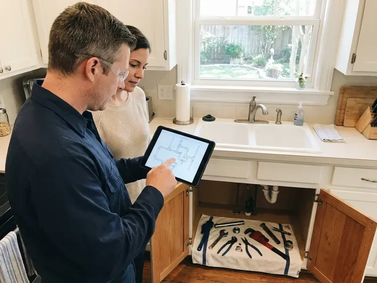
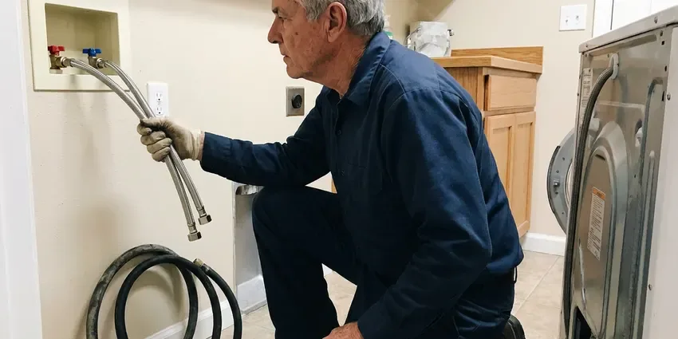
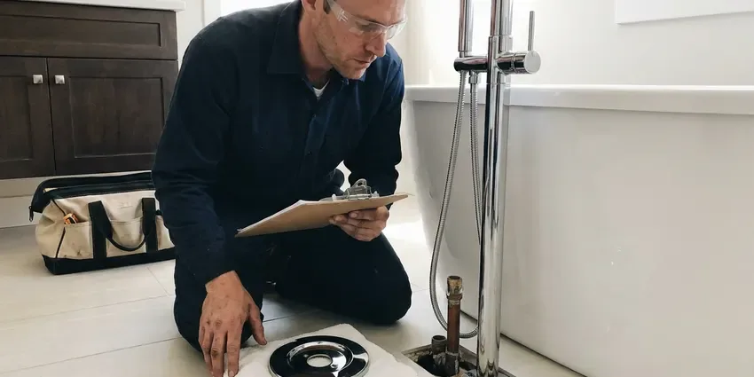
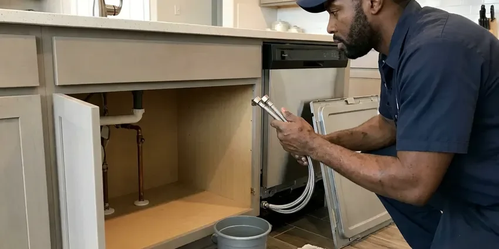

Drains Camera Inspection in McMinnville, OR
Stop guessing about your pipes. Our HD drain camera inspections in McMinnville, OR show cracks, roots and bellies in clear recorded footage.
- No-Mess Inspection
- Expert Plumbers
- Above-Ground Problem Locating
- Clear Video Reports

Know Before You Dig With a Drain Camera Inspection in McMinnville, OR.
Call JFL Plumbing today to schedule your complete drains camera inspection and get lasting solutions.
Reliable Drains Camera Inspection Services in McMinnville, OR
JFL Plumbing performs camera inspections for repeat clogs, home purchases, remodels and insurance claims. Our reports show roots, cracks, offsets, bellies and corrosion so you can plan repairs based on facts rather than guesses.
Our expertise includes:
- Sonde locating to mark defect location and depth on surface
- Inspect pipe integrity for real estate transactions.
- Inspect sewer lines up to several hundred feet.

Additional Plumbing Maintenance Services in McMinnville, OR
Our maintenance and specialty plumbing services in McMinnville, OR catch small problems before they become emergencies.



Customers
Why Choose JFL Plumbing for Drains Camera Inspection in McMinnville, OR?
Choosing JFL Plumbing for your drains camera inspection means you're getting a clear, accurate picture of your plumbing system's health. We provide clear reports and honest recommendations based on our findings.
- Non-Invasive, No need for destructive digging or extensive disruption, as our camera travels through existing access points.
- Preventative Care, Inspecting your drains can catch minor issues before they escalate into costly emergencies, especially where soil shifts and settles.
- Exact Locating, A built-in transmitter lets us mark the problem spot and its depth from the surface.
Citywide Coverage
Our technicians are familiar with the challenges of plumbing in McMinnville, offering fast and reliable drains camera inspection services wherever you are located within the city limits.
Experienced Team
The JFL Plumbing team has deep knowledge of drain line issues common in older homes, including those caused by shifting foundations or mineral buildup. We don't just inspect, we provide clear analysis and solutions.
Safety-First Approach
Safety is paramount in every drains camera inspection we perform. Our methods are non-toxic and environmentally friendly, causing no harm to your property or the local environment in McMinnville.
Trusted Certified McMinnville Plumbing Services Professionals
At JFL Plumbing, we take pride in providing certified plumbing services throughout McMinnville, OR. Backed by recognized industry credentials, our experienced plumbers combine technical skill with genuine customer care. Whether it is repair, installation, or maintenance, we follow strict safety and quality standards to deliver lasting results you can trust.
Call Us Now PHCC Plumbing Contractor Recognition
PHCC Plumbing Contractor Recognition Better Business Bureau (BBB) Accreditation
Better Business Bureau (BBB) Accreditation Angi Certified Pro
Angi Certified Pro ISO 9001 Quality Management Certification
ISO 9001 Quality Management CertificationReliable Drains Camera Inspection Services in McMinnville, OR
Kitchen and Branch Drain Camera Inspection in McMinnville
Smaller cameras fit through kitchen, bathroom and laundry lines inside the house. They help explain recurring clogs and slow drains caused by grease buildup, scale or a broken fitting under the slab. We can see where branch lines tie into the main and whether they slope correctly. This is especially useful before a kitchen or bathroom remodel.

Camera Inspection for Slab Leaks and Under-Slab Drains in McMinnville, OR
Oregon has a mix of older homes with galvanized supply pipe and cast iron drains alongside newer homes plumbed with PEX. In slab homes, drains run under concrete where they cannot be seen. Cracked or separated under-slab drains can leak into the soil and contribute to foundation movement. A camera shows the location of the break and lets us plan the smallest possible access cut or a reroute. This avoids tearing up more flooring than necessary.
Identifying Tree Root Intrusion in McMinnville, OR
Tree roots are a common culprit of drain issues in McMinnville, OR, especially with older homes surrounded by mature trees. Our camera inspections clearly show where roots have entered pipes, causing blockages and structural damage. We use high-definition cameras to distinguish between minor root hair intrusion and severe root balls that require hydro-jetting or even pipe replacement.
Commercial Drain Camera Services in McMinnville
Businesses in McMinnville rely on working plumbing. Our commercial drain camera services help diagnose issues in restaurants, retail spaces, and offices, minimizing downtime. We can inspect larger diameter pipes and more complex systems, identifying problems like heavy grease buildup, foreign object blockages, or pipe erosion that impact business operations.
Post-Repair and Post-Jetting Verification in McMinnville
After a root cutting, hydro jetting or pipe repair, a follow-up camera pass confirms the work was done right. You see that the roots are gone, the grease is cleared or the new section is properly aligned. This step gives peace of mind and documents the condition for future reference. It is also helpful when a warranty or landlord agreement requires proof.
Sewer Line Camera Inspection in McMinnville, OR
Sewer line problems can be extensive and costly. Our sewer line camera inspection service in McMinnville, OR uses longer, more robust cameras to examine the main line connecting your home to the municipal sewer system. We look for root intrusion, cracks, misaligned joints due to ground shift, or complete pipe collapses. Identifying these issues accurately allows us to recommend targeted repairs, such as trenchless pipe repair, rather than disruptive excavation.
Camera Inspection Cost vs. Exploratory Digging in McMinnville, OR
A camera inspection usually costs a few hundred dollars, while exploratory digging can run much higher and still miss the problem. With a camera and locator, we know where to dig and how deep before a shovel touches the ground. That keeps excavation small and restoration costs low. Many homeowners find the inspection more than pays for itself.

Hydro-Jetting Pre-Inspection in McMinnville, OR
Before performing hydro-jetting to clear severe clogs in McMinnville, OR, a drain camera inspection is often crucial. This pre-inspection allows us to assess the nature and location of the blockage, as well as the overall condition of the pipes. It tells us that hydro-jetting is the appropriate solution and that your pipes can withstand the high-pressure water, preventing further damage.
Drain Camera Inspections Near Me in McMinnville, OR
When you search for 'drains camera inspection near me' in McMinnville, OR, JFL Plumbing is your reliable local expert. Our strategically located teams provide a rapid response to your plumbing diagnostic needs. We are familiar with the challenges of McMinnville's plumbing infrastructure.
If you're searching for 'drains camera inspection near me' in McMinnville, OR, look no further than JFL Plumbing. Our local team is ready to respond quickly to your plumbing needs, using advanced diagnostic tools to resolve your drainage issues efficiently. We understand the challenges faced by homeowners and businesses in our community.
JFL Plumbing at a Glance
- Fully licensed plumbing team covering McMinnville, OR
- 24/7 emergency service with same-day scheduling
- Upfront, flat-rate pricing before work begins
- 4.8-star rated by 657+ Oregon customers
McMinnville Map
McMinnville Information
- Population
- 34,450
- Area codes
- Local
- Service area
- McMinnville and communities within 40 miles
- Nearby
- Keizer, Salem, Tigard, Aloha
Oregon has a mix of older homes with galvanized supply pipe and cast iron drains alongside newer homes plumbed with PEX. With many sewer lines running through root-filled yards, a drain camera inspection is the quickest way to find hidden pipe damage in McMinnville, OR.
Expert Services
Trust our professionals for reliable JFL Plumbing solutions in McMinnville, OR.
Our Specialized Plumbing Services in McMinnville, OR
At JFL Plumbing, we provide a complete range of plumbing services across McMinnville, OR. From leak detection to full system installations, our team ensures fast, precise, and affordable service for both residential and commercial properties. Explore our core services below:

Professional plumbing repair, McMinnville

Bathroom Plumbing near McMinnville

Kitchen Plumbing in McMinnville


How Our Drains Camera Inspection Process Works in McMinnville, OR
Here is how we go from scheduling to handing you recorded footage and a plain-language summary.
Request a Quote
Contact JFL Plumbing by calling (971) 333-7694 to schedule your drains camera inspection. We'll discuss your symptoms and set up a convenient time for our technicians to visit your McMinnville property.
Camera Insertion
Our trained technician will insert a high-resolution, waterproof camera into your drain line, typically through an existing access point like a cleanout. The camera feeds live video to a monitor.
Thorough Inspection
We methodically guide the camera through your pipes, identifying any blockages, cracks, root intrusions, or other problems. The footage is recorded for detailed analysis.
Frequently Asked Questions About Drains Camera Inspection in McMinnville
A standard drain or sewer camera inspection typically costs $150 to $400. Adding locating and depth marking usually brings the total to $250 to $500. If we clear the line first, cleaning is billed as a separate item.
No, a permit is generally not required for a routine drain camera inspection in McMinnville, OR, as it is a non-invasive diagnostic service. Permits are typically only needed for actual plumbing repairs or installations that involve altering the existing plumbing system or connecting to municipal lines.
We use professional-grade drain inspection cameras from leading brands like RIDGID and Vivax-Metrotech. These cameras feature high-resolution imaging, self-leveling heads, and powerful LED lighting to provide clear visuals even in dark, wet conditions. They are also flexible enough to navigate various pipe diameters and bends.
Common reasons include repeat clogs, slow drains throughout the house, sewage odors and buying an older home. Inspections are also useful before remodels or after tree root problems. If a plumber recommends an expensive repair, a camera verifies the need.
The camera needs open pipe to travel. If the line is fully blocked, we clear it first and then inspect it. That also lets us see the cause of the blockage.
Cameras reveal roots, cracks, offset joints, bellies, corrosion, grease buildup and collapsed sections. They also show foreign objects and improper connections. Each finding helps determine whether cleaning or repair is needed.
Most inspections take 45 minutes to 90 minutes. Lines without a cleanout or with heavy buildup can take longer. We give you an estimate before starting.
After the inspection, our technician will review the findings with you, show you the recorded footage if desired, and provide a detailed report. Based on the diagnosis, we'll recommend the most effective solutions, whether it's hydro-jetting, pipe repair, or replacement, along with a clear estimate.
What People Are Saying About Our Plumbing Experts?

Daniel K.
A pipe burst at 11 pm and they actually answered. The plumber showed up within the hour, shut everything down, and had us back to normal the next morning. Could not ask for more.
Emergency Plumbing · Keizer, OR
Laura S.
I scheduled a water heater replacement, and the team made the process smooth and affordable. The new unit works perfectly, and they cleaned up after completing the job.
Water Heater Replacement · Hillsboro, OR
Mark T.
When our office needed drain cleaning, JFL Plumbing provided quick, reliable service. The plumber arrived on time and made sure every drain flowed perfectly before leaving. Very satisfied.
Drain Cleaning · Keizer, OR
Patricia H.
We had a slab leak that two other companies could not find. JFL Plumbing located it in under an hour, explained our options, and the price matched the quote to the dollar.
Slab Leak Repair · Salem, ORSofia M.
Two new toilets installed in one visit, no mess left behind, and the tech even adjusted a faucet he noticed was dripping. Fair pricing and really friendly.
Toilet Installation · McMinnville, ORJames P.
Our commercial plumbing system had a leak under the sink, and JFL Plumbing handled it professionally. The plumbers arrived quickly and restored everything without disruption to our customers.
Commercial Plumbing · Salem, OR